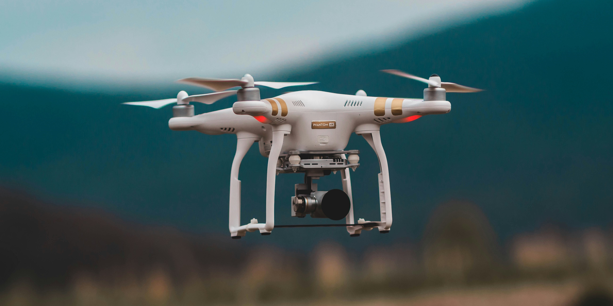

Fitur
| Judul | Deskripsi | Preview | Kunjungi |
|---|---|---|---|
| Soil Sensors | Pemantauan kesehatan tanah secara real-time untuk mengoptimalkan hasil panen. | Lihat | |
| Smart Irrigation | Sistem irigasi otomatis yang disesuaikan dengan kebutuhan tanaman. |

|
Lihat |
| Drone Monitoring | Pengawasan udara untuk analisis lapangan yang akurat. |  | Lihat |
| Data Analytics | Wawasan berbasis data untuk pengambilan keputusan yang lebih baik. |

|
Lihat |
| Mobile App | Kelola semua aspek peternakan Anda dari ponsel cerdas Anda. |

|
Lihat |